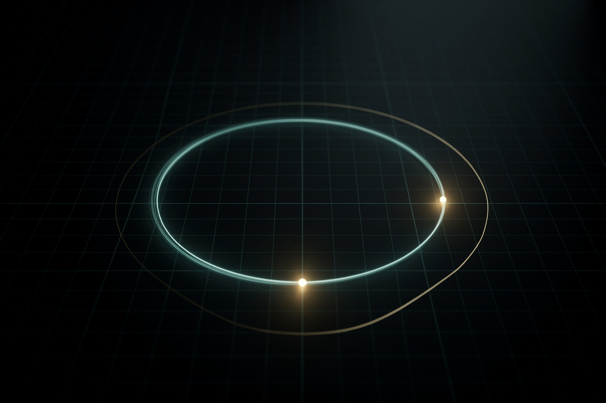

Рабочая заметка · математика · часть V
Формула Эйлера: как вращение стало алгеброй
Одна строчка 1748 года, связавшая экспоненциальный рост с вращением по кругу — и заодно предъявившая уравнение, которое Фейнман называл «самой замечательной формулой в математике».
В 1748 году Леонард Эйлер, раскладывая ex, cos x и sin x в бесконечные ряды и подставляя мнимое число вместо x, обнаружил, что все три функции — на самом деле разные проекции одного и того же объекта: вращения. Формула eiθ = cosθ + i sinθ переводит язык «роста» на язык «поворота» — и превращает анализ колебаний и волн в простую алгебру степеней. Частный случай при θ = π — тождество, объединяющее пять важнейших констант математики в одной строке.

Три взгляда на одну формулу
| Взгляд | Что видно |
|---|---|
| Алгебраический | eiθ — комплексное число, равное cosθ + i sinθ |
| Геометрический | точка на единичной окружности комплексной плоскости под углом θ от оси |
| Аналитический | совпадение бесконечных рядов ex, cos x, sin x после подстановки x = iθ (§3) |
Ни один из трёх взглядов не «главнее» — сила формулы Эйлера именно в том, что она одновременно алгебраическая тождественность, геометрический факт и аналитическое совпадение рядов. Начнём с самого наглядного — геометрии.
Геометрия: точка на окружности
Формулировка. Комплексное число eiθ — это точка на единичной окружности (радиус 1) комплексной плоскости, отложенная под углом θ от положительной вещественной оси:
Пока точка обходит окружность (θ растёт от 0 до 2π), её горизонтальная координата честно вычерчивает косинус, а вертикальная — синус — те же самые функции, что вы видели на графиках тригонометрии, только теперь как проекции РАВНОМЕРНОГО вращения, а не как отдельные волнистые кривые. Именно эта картинка и есть содержание формулы: «e в мнимой степени» — это не какое-то абстрактное число, а координата точки при равномерном движении по кругу.
cos²θ + sin²θ = 1 — основное тригонометрическое тождество, известное со школы. Для eiθ это означает: расстояние от начала координат до точки всегда ровно 1, при любом θ — точка физически не может сойти с единичной окружности, только бегать по ней. Отсюда и роль θ — это буквально пройденный угол, единственное, что меняется.
Откуда берётся: ряды Тейлора
Формула — не постулат, а следствие того, что ex, cos x и sin x можно записать как бесконечные суммы (ряды Тейлора):
Подставим в ряд для ex вместо x мнимое число iθ и вспомним, что i² = −1, i³ = −i, i⁴ = 1 (степени i циклически повторяются с периодом 4):
Сгруппируем отдельно слагаемые без i (чётные степени θ) и слагаемые с i (нечётные степени) — первая группа в точности совпадёт с рядом для cosθ, вторая (без общего множителя i) — с рядом для sinθ:
Совпадение не «подогнано» — оно неизбежно, стоит только определить ex для комплексных чисел через тот же самый ряд, что и для вещественных. Это и объясняет, почему формула работает: три, казалось бы, совсем разных объекта (экспонента, косинус, синус) математически являются одним семейством функций, различающихся только тем, какой аргумент — вещественный, чисто мнимый, — в них подставлен.
Тождество Эйлера
Подставим в формулу Эйлера конкретный угол θ = π (пол-оборота, точка на окружности оказывается ровно слева от центра, в точке −1):
В опросах математиков (например, опрос журнала Mathematical Intelligencer, 1990) тождество Эйлера стабильно занимает первое место. Причина не в мистике, а в предельной экономности: пять констант из совершенно разных областей математики (0 и 1 — арифметика, e — анализ/рост, i — алгебра/комплексные числа, π — геометрия/окружности) связаны тремя простейшими операциями (сложение, умножение, возведение в степень) без единого лишнего символа. Ричард Фейнман называл его «нашей жемчужиной» и «самой замечательной формулой в математике».
Сквозной пример: переменный ток
Инженеры-электрики редко пишут cos и sin явно — вместо этого напряжение переменного тока представляют как вращающийся вектор (фазор) на комплексной плоскости, используя формулу Эйлера:
Почему это удобнее, чем работать с cos/sin напрямую: сложение двух переменных напряжений одной частоты (например, в сети) сводится к сложению комплексных чисел (векторов) — простая геометрия параллелограмма, вместо громоздких тригонометрических формул сложения углов. Формула Эйлера — это словарь-переводчик между «неудобной» тригонометрией и «удобной» алгеброй комплексных экспонент.
Преобразование Фурье (раскладывающее любой сигнал — звук, изображение — в сумму простых колебаний разных частот) в своей практической форме почти всегда записывается через eiθ, а не через cos/sin по отдельности — ровно по той же причине: складывать и умножать комплексные экспоненты вычислительно проще. Именно это лежит в основе сжатия аудио (MP3) и изображений (JPEG).
Куда это ведёт: квантовая фаза
Формула Эйлера не осталась математической диковинкой — в 1920-х Эрвин Шрёдингер обнаружил, что волновая функция квантовой частицы естественно записывается через ту же самую экспоненту с мнимым показателем:
Здесь роль «угла θ» играет комбинация импульса p, энергии E и времени t частицы. Модуль такой волновой функции (расстояние точки от центра, §2) всегда равен 1 — это математически гарантирует унитарность квантовой эволюции: полная вероятность найти частицу где-нибудь всегда остаётся равной 100%, как бы ни менялась фаза. Без формулы Эйлера пришлось бы отдельно следить за косинусной и синусной частями волновой функции — с ней всё сводится к одной вращающейся экспоненте.
Любопытный квантовый нюанс: угол θ отдельной волновой функции в изоляции физически не измерим (можно domножить всю формулу на любое eiα, и предсказания не изменятся). Но если частица может пройти по двум разным путям одновременно (как в эксперименте с двумя щелями), РАЗНИЦА фаз между путями становится измеримой — она и создаёт интерференционную картину. Реальность самого вращения на комплексной плоскости остаётся предметом философских споров, но его математические следствия — нет.
На сайте это отдельный закон, если хочется пройти глубже:
Уравнение Шрёдингера · Формула де Бройля · Уравнение Планка-Эйнштейна
Эксперимент дома
Прикрепите верёвку к гвоздю или ручке двери, привяжите к другому концу небольшой груз (яблоко, ключи) и раскрутите его так, чтобы он равномерно вращался по кругу в горизонтальной плоскости (как игрушка poi). Посветите на него фонариком сбоку, строго горизонтально, так, чтобы тень падала на стену.
Что заметить тень на стене будет двигаться не по кругу, а строго туда-сюда по прямой, синусоидально замедляясь у краёв и ускоряясь в центре — это и есть проекция равномерного вращения на одну ось (§2, cosθ или sinθ, в зависимости от того, откуда светите). Ровно то же самое проделывает формула Эйлера математически: берёт круговое движение и честно вычисляет его проекцию.
Если дома есть спирограф (набор шестерёнок с отверстиями для рисования узоров) или можно найти онлайн-симулятор — порисуйте несколько узоров, меняя соотношение радиусов шестерёнок.
Что заметить красивые «цветочные» узоры спирографа — это буквально суммы нескольких вращений с разными частотами (математически — сумма нескольких eiθ с разными коэффициентами при θ), тот же принцип, что лежит в основе разложения Фурье любого сложного сигнала на простые колебания (§5).
Задачи для проверки
Сначала подумайте сами, затем откройте решение. Решение везде идёт по схеме: Дано → Закон → Решение → Ответ.
1. Чему равно e^(iπ/2) в алгебраической форме (a + bi)?
Дано θ = π/2 (четверть оборота).
Закон формула Эйлера (§2): eiθ = cosθ + i·sinθ.
Решение cos(π/2) = 0, sin(π/2) = 1 ⇒ eiπ/2 = 0 + i·1.
Ответ i — точка ровно наверху единичной окружности.
2. Не вычисляя явно, объясните, почему |e^(iθ)| (модуль числа) равен 1 при ЛЮБОМ значении θ.
Закон геометрический смысл формулы Эйлера (§2) + основное тригонометрическое тождество.
Решение |eiθ| = √(cos²θ + sin²θ) = √1 = 1 — тождество cos²+sin²=1 верно для любого угла, поэтому расстояние точки от центра всегда ровно единица, вне зависимости от θ.
Ответ всегда 1 — точка обязана оставаться на единичной окружности.
3. Чему равно e^(i·2π) (полный оборот)? Что это говорит о периодичности e^(iθ)?
Дано θ = 2π (полный оборот).
Закон формула Эйлера (§2).
Решение cos(2π) = 1, sin(2π) = 0 ⇒ ei·2π = 1 + i·0 = 1.
Ответ ei·2π = 1 — после полного оборота точка возвращается в старт; eiθ периодична с периодом 2π, как и полагается точке на окружности.
4. Два переменных напряжения одной частоты представлены фазорами U₁ = 3 (вдоль вещественной оси) и U₂ = 4i (вдоль мнимой оси). Чему равен модуль суммарного напряжения?
Дано U1 = 3, U2 = 4i (перпендикулярные фазоры, §5).
Закон сложение комплексных чисел (геометрически — параллелограмм) + модуль комплексного числа |a+bi| = √(a²+b²).
Решение U1+U2 = 3+4i; |3+4i| = √(9+16) = √25 = 5.
Ответ 5 — классическая тройка 3-4-5, суммарное напряжение больше каждого из слагаемых по отдельности, но меньше их арифметической суммы (7), потому что фазоры не совпадают по направлению.
5. Выразите cos θ через e^(iθ) и e^(-iθ), пользуясь тем, что e^(-iθ) = cos θ − i·sin θ.
Дано eiθ = cosθ+i·sinθ, e−iθ = cosθ−i·sinθ.
Закон сложение двух форм формулы Эйлера — мнимые части сокращаются.
Решение eiθ+e−iθ = 2cosθ ⇒ cosθ = (eiθ+e−iθ)/2.
Ответ cosθ = (eiθ+e−iθ)/2 — стандартная формула, которой физики и инженеры пользуются едва ли не чаще, чем самим определением косинуса.
Опечатка, неверная формула, число не сходится, коряво объяснено — напишите нам: feedback@bridge42worlds.org. Каждое сообщение реально читается, разбирается и по нему вносится правка — это не «в стол».